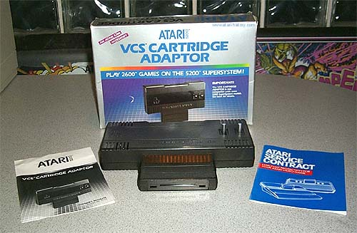
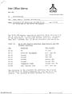
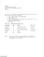
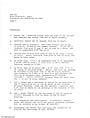

|
2600 Cartridge Adapter for the Atari 5200 Supersystem

Originally the design of the Atari "PAM" (also known as Super-Stella and
Sylvia) was to have built in Atari 2600 compatibility. However,
during the development the architecture of that version of the new Atari "SuperSystem" was dropped in favor of a new Atari "PAM" which became the
Atari 5200: SuperSystem. This system was based on the
Atari 400/800 computer system chipset and would not be compatible with
the Atari 2600 game console. With enormous pressure coming
from all sides with Coleco and its Colecovision 2600 adapter and Intellivision
with its "System Changer" which gave it 2600 compatibility Atari designed
and released an adapter of its own for the Atari 5200 Supersystem.
The Atari CX-55 2600 cartridge adapter was the result.
Many consumers complained about the odd way the adapter stuck out of the
top of the Atari 5200, then a cartridge had to be plugged ontop of the
CX-55 making for a clumsy looking arrangement. The reason for
this was the Atari 5200's top cartridge port was never intended to accept
any kind of expansion modules. All expansion was to be
done from the rear expansion port on the console. Due
to the 5200's sleek angled design the CX-55 module was made to sit straight
up. If the design had been made for the module to sit
flush ontop of the Atari 5200, this would have involved the need to design
specially angled electrical connectors which would have added to the price
and may have lowered reliability. Time was precious and
the design was kept simple.
While the Atari CX-55 adapter brought a whole world of existing games to
5200 owners, it came with a few requirements. In order
for the module to work, the Atari 5200 owner had to own either a 2 port
Atari 5200 (having only 2 front joystick ports) or a factory modified Atari
4 port 5200. Otherwise they would have to take their Atari
5200 to an authorized Atari Service Center who would perform, free of charge,
an upgrade to the owners 4 port model to make it compatible with the Atari
CX-55 module.
Originally when this incompatibility issue arose at Atari, the solution
was to scrap over $1 million dollars in existing Atari 5200 4-port system
boards. However one of Atari's Consumer Electronics Division
engineers named Gary Rubio came up with a quick and easy modification for
the existing stockpile of 4 port 5200 SuperSystems.
Below are the 3 pages from an Atari Internal Memo detailing the modification.
|
|  |  |  |
|
|
|
|
{kind=link}
{kind=link}
{kind=link}